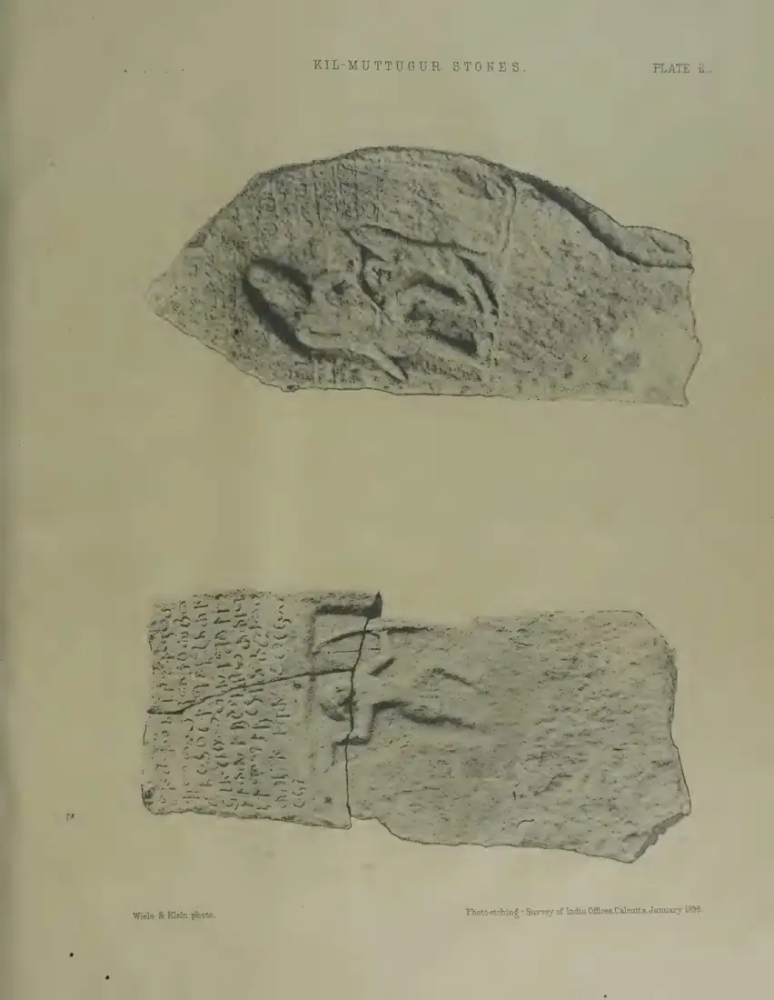

Four Tamiḻ inscriptions at Kiḷ-Muṭṭugūr
Reading this page
p. 23 is the page number printed in the volume; PDF 391 is that page's place in the scanned PDF, the page to open in the source scan. The badge at the bottom right shows the page you are reading as you scroll: click it to show printed or PDF numbers, or both, and to jump to a page. ↑ Top takes you back to the start.
Footnotes are numbered through the article and gathered at its end: click a number in the text to read its note in place, and ↩ in the notes to come back. Plates stand where the volume binds them, at the end of the paragraph they interrupt; All plates shows them together.
KIL-MUTTUGUR INSCRIPTIONS.
(Concluded from page 179.)D.—Inscription of the 3rd year of Narasimhavarman.
On page 177, above, it was stated that the fourth of the Kil-Mutṭugūr slabs had been lost since 1887. The Collector of North Arcot has recently succeeded in recovering the missing slab, hidden in a ruined tunnel and broken in three pieces. It bears, in relief, a warrior in a defiant attitude, who holds a bow and some other weapon. At the top of the sculpture is a Tamil inscription, now broken in two pieces, but tolerably well preserved. The alphabet resembles that of the other inscription of Narasimhavarman (above, p. 177). The letter ḥ looks like the modern secondary form of ai, with fully developed central loop. The viráma is expressed by a vertical dash behind t of nátṭu in line 3. The syllable ṭu or ṭu of yáṇṭu (l. 2) and Mukkuṭtur (l. 6) resembles the r of °parumarku (l. 1) and múṇrávadu (l. 2); the u is attached to the lower end of t in nátṭu (l. 3); it is separated from d in ṭur (l. 4); and the ṭu of mītṭu (l. 7) resembles the tá of patṭār (l. 8). With the archaic form Śaṇmaduraru (l. 6 f.) compare areśaru, which occurs twice in the Vallam cave inscription.1
The inscription is dated in the 3rd year of the reign of kó vijaya-Narasimhavarman and records the death of a warrior in a cattle-raid, which had been organized by a certain Śaṇmadura.2
At my suggestion the four Kil-Mutṭugūr slabs have now been removed to the Madras Museum. The two slabs bearing the inscriptions C. (p. 179 above) and D. (below) are figured on the accompanying Plate.
TEXT.3
| 1 | Kó | viśe[ya]- | Naraisi[n]gaparumar- | |
| 2 | ku | yáṇṭu | [mú]ṇrávadu | Vi[ṇ]- |
| 3 | ṛunátṭu | vaṭa-karai | álun=Daga- | |
| 4 | ṭurnáṭar4 | [Va]limadura-śevagar | [Pá]- | |
| 5 | kkattu=kkuṭi | Atimattar | Mu- | |
| 6 | rugaṇ | 5Mukkuṭtur=ttoṭu | Śaṇma- | |
| 7 | duraru | ko[l]la=t[to]ṛu | mītṭu=ppa- | |
| 8 | tṭār [||*] |
TRANSLATION.
In the third year (of the reign) of the king, the victorious Narasimhavarman,— when Śaṇmadura lifted cattle6 at Mukkuṭtūr,7—Atimattar Murugaṇ, an inhabitant of [Pá]kkam (and) a servant of [Va]limadura, the chief of Tagaṭūrnáṭu,8 who ruled over the northern bank (of the river) in Viṇṛunáṭu, having recovered the cattle, fell.

Footnotes
1↩(p. 360, n. 1) South-Ind. Inscr. Vol. II. p. 341.
2↩(p. 360, n. 2) The donee of the other inscription of Narasimhavarman was a servant of the same Śaṇmadura. This name represents the Sanskrit Sanmadhura and not, as I formerly suggested (p. 178 above), Sháṇmátura.
3↩(p. 360, n. 3) From three inked estampages, prepared by Mr. T. P. Krishnasvami Sastri, M.A.
4↩(p. 360, n. 4) Read dár.
5↩(p. 360, n. 5) Read Mukkuṭtūr.
6↩(p. 360, n. 6) See above, p. 179, note 2.
7↩(p. 360, n. 7) Compare p. 177 above.
6 On Tagaṭūr, a place in the Nañjanagūṭu táluka of the Mysore district, see Ind. Ant. Vol. XXII. p. 66.
All plates (1)
Click a plate to go to its place in the text; each plate there has links to the previous and next plate and back to this list.